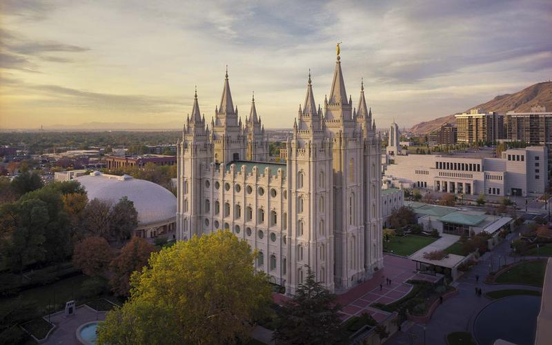
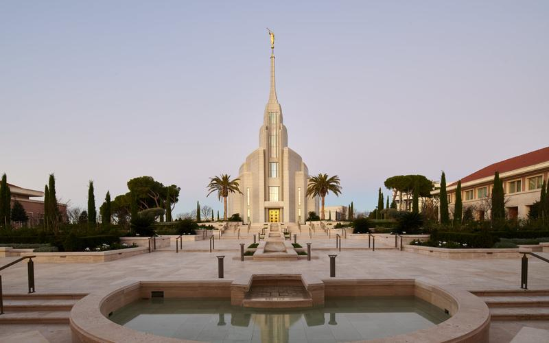
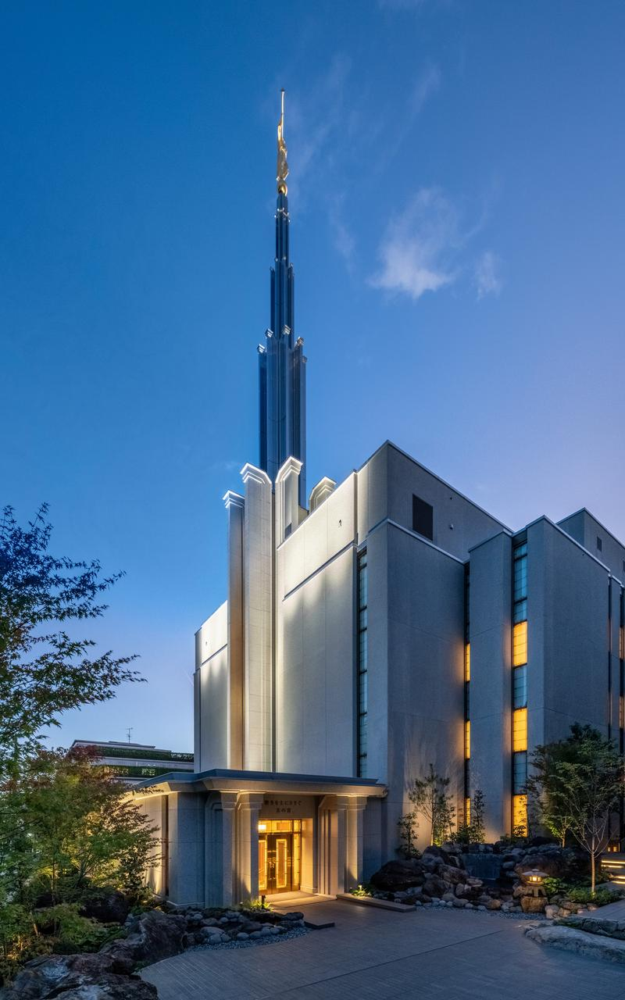
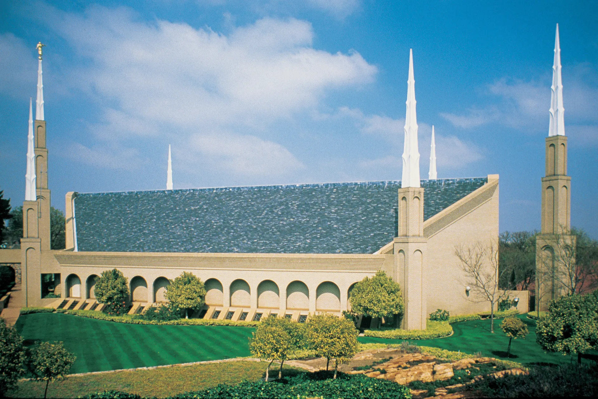
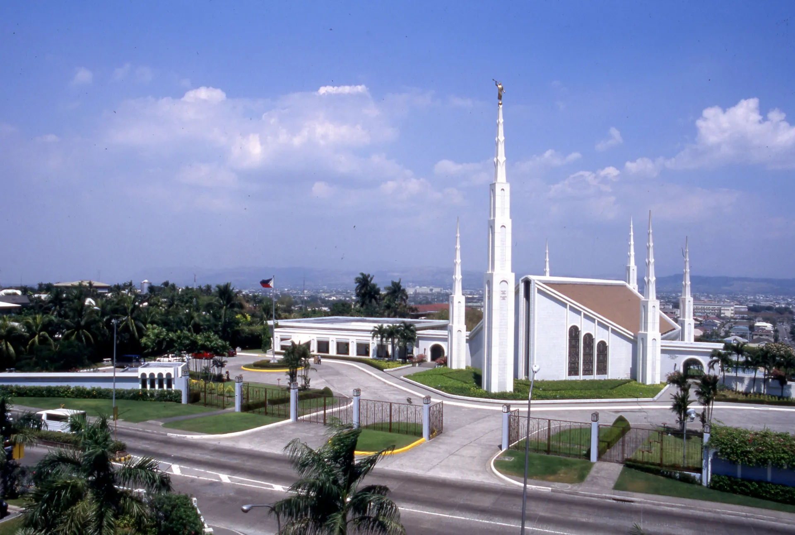
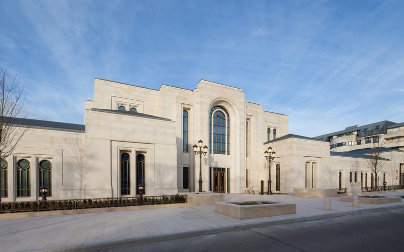

Temple Album
☰
Home
Old
New
Large
Small
LDS Temple Gallery
Aba Nigeria Temple

Salt Lake Temple

Rome Italy Temple
São Paulo Brazil Temple

Tokyo Japan Temple

Johannesburg South Africa Temple
Provo City Center Temple

Manila Philippines Temple

Paris France Temple